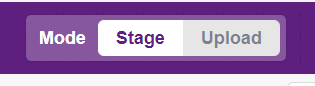
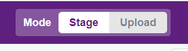
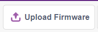
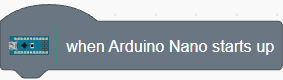
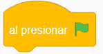
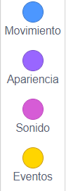
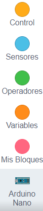
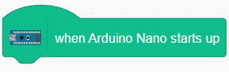
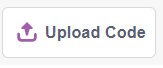

Los dos modos de funcionar de Pictoblox
El siguiente tema es de suma importancia para comprender el funcionamiento de Pictoblox. Sus dos modos de funcionamiento son:

El siguiente tema es de suma importancia para comprender el funcionamiento de Pictoblox. Sus dos modos de funcionamiento son:

El Modo Stage/Escenario nos permite conectarnos con Arduino y combinar el uso de sus bloques con todos los bloques de Pictoblox. Para ello es necesario mantener conectada la placa (ya sea por cable o por bluetooth) y cargar el Firmware a la placa. Esto se puede hacer al comienzo o en cualquier momento antes de ejecutar el programa, ya que no carga el programa en sí, sino un protocolo de comunicación (tipo Firmata), haciendo clic en el botón:

Vamos a notar que al estar en Modo Stage no es posible usar el bloque de inicio de Arduino Nano (ya que el uso de la placa depende de su conexión con Pictoblox) :

En cambio es posible el uso de:
 Con PonchoBot se abordan distintos proyectos usando este Modo Stage, donde lo que sucede en su placa Arduino Nano también se puede ver reflejado en la pantalla/Escenario de Pictoblox.
El Modo Upload o Carga, permite a la placa Arduino Nano independizarse de Pictoblox, ya que carga todo el programa en su memoria. Esto es usado cuando queremos programar solamente la placa (por ej. queremos hacer que PonchoBot siga una línea o esquive obstáculos sin estar conectado por cable al puerto USB) y no programar acciones en la pantalla/Escenario de Pictoblox.
En este Modo Upload/Carga se desactivan las primeras 4 categorías de Pictoblox:

quedando únicamente disponible, las últimas 5 categorías:

Para iniciar el programa en este modo, se habilita el bloque:

Para la carga del programa a la placa Arduino Nano se debe hacer clic en el botón habilitado a tal fin:
